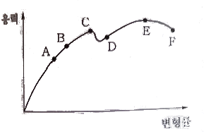
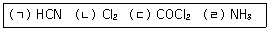

가스기능장 (2010-07-11 기출문제)
1과목: 임의 구분
1. 고압가스 일반제조 시설기준 중 가연성가 스 제조설비의 전기설비는 방폭성능을 가지는 구조이어야 한다. 다음 중 제외 대상이 되는 가스는?
- 에탄
- 브롬화메탄
- 에틸아민
- 수소
(정답률: 91%)

2. SI단위인 Joule에 대한 설명으로 옳지 않은 것은?
- 1Newton의 힘의 방향으로 1[m] 움직이는 데 필요한 일이다
- 1[Ω]의 저항에 1[A]의 전류가 흐를 때 1초간 발생하는 열량이다
- 1[kg]의 질량을 1[m/s2] 가속시키는데 필요한 힘이다.
- 1Joule은 약 0.24[cal]에 해당한다
(정답률: 79%)
3. 사업자 등은 그의 시설이나 제품과 관련하여 가스사고가 발생한 때에는 한국가스안전공사에 통보하여야 한다. 사고의 통보 시에 통보내용에 포함되어야 하는 사항으로 규정하고 있지 않은 사항은?
- 피해현황(인명 및 재산)
- 시설현황
- 사고내용
- 사고원인
(정답률: 89%)
4. 가스압축에 대한 설명으로 옳은 것은?
- 등온압축 동력이 단열압축 동력보다 크다.
- 동일가스, 동일 흡입 온도에서는 압축비가 클수록 토출온도는 낮다
- 압축비가 일정한 경우 간극 용적비가 작아질수록 체적효율은 좋아진다.
- 압축비가 일정한 경우 간극 용적 비가 작아질수록 체적효율은 나빠진다.
(정답률: 79%)
5. 흡수식 냉동설비의 냉동능력 정의로 옳은 것은?
- 발생기를 가열하는 24시간의 입열량 6천 640[kcal]를 1일의 냉동능력 1[톤]으로 본다.
- 발생기를 가열하는 1시간의 입열량 3천 3201kcal]를 1일의 냉동능력 1[톤]으로 본다
- 발생기를 가열하는 1시간의 입열량 6천 640[kcal]를 1일의 냉동능력 1[톤]으로 본다.
- 발생기를 가열하는 24시간의 입열량 3천 320[kcal]를 1일의 냉동능력 1[톤]으로 본다
(정답률: 89%)
6. 어떤 용기에 액체염소 25(kg]이 들어있다. 이 염소를 표준상태인 바깥으로 내 놓으면 몇 [m3]의 부피를 차지하는??
- 7,9
- 11.0
- 15.4
- 22.4
(정답률: 56%)
7. 독성가스 배관 설치 시 반드시 2중 배관으로 하지 않아도 되는 가스는?
- 에틸렌
- 시안화수소
- 염화메탄
- 암모니아
(정답률: 64%)
8. 반데르발스(Van der Waals) 상태식 중 보정항에 대하여 옳게 표현한 것은?
- 실제기체에서 분자 간 상호 인력의 작용과 분자 자체의 크기(부피)를 고려하여 보정한 식이다
- 실제기체에서 원자 간의 공유결합에 의한 압력 감소를 고려하여 보정한 식이다
- 실제기체에서 양이온과 음이온의 작용에 의한 이온결합을 고려하여 보정한 식이다
- 실제기체에서 이상기체보다 높은 압력과 낮은 온도를 고려하여 보정한 식이다.
(정답률: 74%)
9. 가스안전 영향평가 대상 등에서 산업통상자원부령이 정하는 가스배관이 통과하는 지점에 해당하지 않는 것은?
- 해당 건설공사와 관련된 굴착공사로 인하여 도시가스배관이 노출될 것이 예상되는 부분
- 해당 건설공사에 의한 굴착바닥면의 양끝으로부터 굴착심도의 0.6배 이내의 수평 거리에 도시가스배관이 매설된 부분
- 해당 공사에 의하여 건설될 지하시설물 바닥의 직하부에 관지름 500[mm]인 저압의 가스배관이 통과하는 경우 그 건설공사에 해당하는 부분
- 해당 공사에 의하여 건설될 지하시설물 바닥의 직하 부에 최고사용압력이 중압 이상인 가스배관이 통과하는 경우 그 건설공사에 해당하는 부분
(정답률: 75%)
10. 고압가스 운반 시 가스누출사고가 발생하였다. 이 부분의 수리가 불가능한 경우 재해 발생 또는 확대를 방지하기 위한 조치사항 으로볼수없는 것은?
- 상황에 따라 안전한 장소로 운반한다
- 상황에 따라 안전한 장소로 대피한다.
- 비상연락망에 따라 관계 업소에 원조를 이리동
- 펜스를 설치하고 다른 운반차량에 가스를 옮긴다
(정답률: 83%)
11. 가스공급시설 중 최고사용압력이 고압인 가스홀더 2개가 있다. 2개의 가스홀더의 지름이 각각 30[m], 50[m]일 경우 두 가스홀더의 간격은 몇 [m] 이상을 유지하여야 하는 가?
- 15[m]
- 20[m]
- 30[m]
- 50[m]
(정답률: 89%)
12. 고온, 고압하에서 일산화탄소를 사용하는 장치에 철재를 사용할 수 없는 주된 원인은?
- 철카르보님을 만들기 때문에
- 탈탄산작용을 하기 때문에
- 중합부식을 일으키기 때문에
- 가수분해하여 폭발하기 때문에
(정답률: 91%)
13. 도시가스 사업법에서 정의하는 용어에 대한설명 중 틀린 것은?
- 배관이라 함은 본관, 공 , 내관을 말한다.
- 본관이라함은 공급관 옥외배관을 말한다.
- 내관이라함은 가스사용자가 소유하고 있는 토지의 경계에서 연소기에 이르는 배관을 말한다.
- 액화가스라함은 상용의 온도에서 압력이 0.2[MPa] 이상이 되는 것을 말한다.
(정답률: 80%)
14. 몰조성으로 프로판 50[%], n-부탄 50[%]인 LP가스가 있다. 이 가스 1[kg] 중 프로판의 질량은 약 몇 [kg]인가?
- 0.32
- 0.38
- 0.43
- 0.52
(정답률: 62%)
15. 가스 정압기에서 메인밸브의 열림과 유량 과의 관계를 의미하는 것은?
- 정특성
- 동특성
- 유량특성
- 오프셋
(정답률: 94%)
16. 수소(H2)가스의 공업적 제조법이 아닌 것은?
- 물의 전기분해
- 공기 액화 분리법
- 수성가스법
- 석유의 분해법
(정답률: 83%)
17. 다음 중 풍압대와 관계없이 설치할 수 있는 방식의 가스보일러는?
- 자연배기식(CF) 단독배기통 방식
- 자연배기식(CF) 복합배기통 방식
- 강제배기식(FE) 단독배기통 방식
- 강제배기식(FB) 공동배기구 방식
(정답률: 91%)
18. 이상기체의 내부에너지(internal energy)에 대하여 가장 바르게 설명한 것은?
- 온도 및 부피의 함수이다.
- 온도 및 압력의 함수이다.
- 온도만의 함수이다.
- 압력만의 함수이다
(정답률: 89%)
19. 아세틸렌을 용기에 충전할 때 충전 중의 압력은 얼마 이하로 하여야 하는가?
- 1.5[MPa]
- 2.5[MPa]
- 3.5[MPa]
- 4.5[MPa]
(정답률: 89%)
20. 지하철 주변에 도시가스 배관을 매설하려고 한다. 이 때 다음 중 무엇이 가장 문제가 되는가?
- 대기부식
- 미주전류부식
- 고온부식
- 응력부식균열
(정답률: 92%)
2과목: 임의 구분
21. 다음 중 염소의 주된 용도에 해당하지 않는 것은?
- 수돗물의 살균
- 염화비닐의 원료
- 섬유의 표백
- 수소의 제조원료
(정답률: 88%)
22. 다음 응력-변형률선도에서 최대인장강도를 나타내는 점은?

- C
- D
- E
- F
(정답률: 84%)
23. 다음 중 피스톤식 팽창기를 사용한 공기액화 사이클은?
- 클라우드(Claude) 공기 액화 사이클
- 린데(Linde) 공기 액화 사이클
- 필립스(Philips) 공기액화 사이클
- 캐스케이드(cascade) 공기액화 사이클
(정답률: 76%)
24. 다음 독성가스와 그 제독제를 잘못 연결한 것은?
- 염소-가성소다수용액, 탄산소다수용액, 소석회
- 포스겐-가성소다수용액, 소석회
- 황화수소-가성소다수용액, 탄산소다수용액
- 시안화수소-탄산소다수용액, 소석회
(정답률: 73%)
25. 섭씨온되℃]와 화씨온도 [T]가 같은 값을 나타내는 온도는?
- -20[C]
- -40[℃]
- -50[℃]
- -60[C]
(정답률: 92%)
26. 수소의 품질검사 시 흡수제로 사용되는 용액은?
- 암모니 아성 가성소다 용액
- 하이드로설파이드시약
- 동암모니아시약
- 발연황산시약
(정답률: 76%)
27. 다음 중 법령상 독성가스가 아닌 것은?
- 불화수소
- 불소
- 염화비닐
- 모노실란
(정답률: 74%)
28. 물체가 열을 받고 변화할 경우에 대한 설명으로 틀린 것은?
- 물체간의 인력에 저항하여 집합상태가 변화한다.
- 위치에너지를 증가시킨다.
- 외부에 저항하여 체적변화를 일으킨다.
- 분자 운동에너지를 증가시킨다.
(정답률: 76%)
29. 고압차단 스위치에 대한 설명으로 틀린 것은?
- 작동압력은 정상고압보다 4[kgf/cm] 정도 높다
- 전자밸브와 조합하여 고속다기통 압축기의 용량제어용으로 주로 이용된다.
- 압축기 1대마다 설치 시에는 토출 스톱밸브 직전에 설치한다
- 작동 후 복귀 상태에 따라 자동 복귀형과 수동 복귀형이 있다.
(정답률: 55%)
30. 내진설계 관련 용어에 대한 설명으로 옳은 것은?
- 가속도 시간이력이란 지진의 지반운동가 속도를 시간별로 측정하여 기록한 이력을 말한다.
- 기능수행수준이란 설계지진 작용 시 구조물이나 시설물에 변형이나 손상이 발생할 수 있으나 그 수준과 범위는 구조물이나 시설물이 붕괴되거나 또는 이들의 손상으로 인하여 대규모 피해가 초래되는 것이 방지될 수 있는 성능수준을 말한다.
- 하중계수 설계법이란 구조물의 관성력은 무시하고, 작용하는 하중의 시간별 크기에 대하여 해석하는 방법을 말한다
- 가속도 계수란 지반운동으로 구조물에서 발생한 최대지진 가속도를 말한다
(정답률: 67%)
31. 공기액화 분리장치에 아세틸렌가스가 혼입되면 안 되는 이유로 옳은 것은?
- 배관 내에서 동결되어 막이므로
- 산소의 순도가 나빠지기 때문에
- 질소와 산소의 분리가 방해되므로
- 분리기 내의 액체산소탱크에 들어가 폭발하기 때문에
(정답률: 92%)
32. 진탕형 오토클레이브(auto clave)의 특성에 대한 설명으로 옳은 것은?
- 고압력에 사용할 수 없다.
- 가스누설의 가능성이 없다.
- 반응물의 오손이 많다.
- 뚜껑판의 뚫어진 구멍에 촉매가 들어갈 염려가 없다.
(정답률: 76%)
33. 가연성가스가 폭발할 위험이 있는 농도에 도달할 우려가 있는 장소의 등급에 대한 설명으로 틀린 것은?
- 1종 장소는 상용상태에서 가연성가스가 체류하여 위험하게 될 우려가 있는 장소. 정비보수 또는 누출 등으로 인하여 종종 가연성가스가 체류하여 위험하게 될 우려가 있는 장소를 말한다
- 2종 장소는 밀폐된 용기 또는 설비 내에 밀봉된 가연성가스가 그 용기 또는 설비의 사고로 인해 파손되거나 오조작의 경우에만 누출할 위험이 있는 장소를 말한다.
- 0종 장소는 상용의 상태에서 가연성가스의 농도가 연속해서 폭발하한계 이상으로 되는 장소(폭발상한계를 넘는 경우에는 폭발한계내로 들어갈 우려가 있는 경우를 포함한다.)를 말한다.
- 4종 장소는 확실한 기계적 환기조치에 의하여 가연성가스가 체류하지 않도록 되어 있으나 환기장치에 이상이나 사고가 발생한 경우에는 가연성가스가 체류하여 위험하게 될 우려가 있는 장소를 말한다.
(정답률: 79%)
34. 가스도매사업자의 가스공급시설의 시설기준으로 옳지 않은 것은?(오류 신고가 접수된 문제입니다. 반드시 정답과 해설을 확인하시기 바랍니다.)
- 액화석유가스의 저장설비와 처리설비는 그 외면으로부터 보호시설까지 20[m] 이상의 거리를 유지한다
- 고압인 가스공급시설은 통로, 공지 등으로 구획된 안전구역 안에 설치하되, 그 면적은 2만[m2] 미만으로 한다.
- 2개 이상의 제조소가 인접하여 있는 경우의 가스공급시설은 그 외면으로부터 그 제조소와 다른 제조소의 경계까지 20[m] 이상의 거리를 유지한다.
- 액화천연가스의 저장탱크는 그 외면으로부터 처리능력이 20만[m2] 이상인 압축기와 30[m] 이상의 거리를 유지한다
(정답률: 56%)
35. 저온장치의 운전 중 CO2와 수분이 존재할때 장치에 미치는 영향에 대한 설명으로 가장 적절한 것은?
- CO2는 저온에서 탄소와 수소로 분해되어 영향이 없다.
- 얼음이 되어 배관밸브를 막아 흐름을 저해한다
- CO2는 저장장치의 촉매 기능을 하므로 효율을 상승시킨다
- CO2는 가스로 순도를 저하시킨다
(정답률: 89%)
36. 산소 16(kg과 질소 56(kg]인 혼합기체의 전압이 506.5[kPa]이다. 이 때 질소의 분압은 몇 [kPa]인가?
- 202.6
- 303.9
- 4⑤.2
- 506,5
(정답률: 64%)
37. 아세틸렌의 주된 제법으로 옳은 것은?
- 메탄과 같은 탄화수소를 고온(1200~2000[C])에서 열분해 시켜서 만든다.
- 메탄과 같은 탄화수소를 수증기 개질법에 의하여 만든다.
- 메탄과 같은 탄화수소를 부분산화법에 의하여 만든다.
- 메탄과 같은 탄화 수소를 연소시켜서 얻는다.
(정답률: 70%)
38. 파이핑 레이아웃(piping layout)의 실시 시 주의사항으로 가장 거리가 먼 것은?
- 항상 일관된 사고(思考)에 의해 행하도록 하며 장치 전체의 미관을 고려한다
- 장치가 운전하기 쉽도록 고려한다
- 유지관리에 대한 충분한 고려를 한다.
- 배관은 되도록 굴곡(屈曲)을 많게 하여 최단거리로 한다
(정답률: 87%)
39. 강한 자성을 가지고 있어 자장에 대해 흡인되는 성질을 이용하여 분석이 가능한 가스는?
- CH4
- CO2
- O2
- H
(정답률: 72%)
40. 평면배관도면의 배관선에는 각각 반드시 관의 높이 치수로서 B.O.P EL(bottom of pipe elevation) 또는 C.L EL(center line of pipe elevation)의 약자(略字)의 기호를 붙인 숫자를 기입하여야 한다. 다음 중 BOP EL을 기입하여야 하는 경우는?
- 두 개 이상의 배관이 공통 가태상(架台上)에 병렬 배관되는 경우와 보온, 보냉 시공되는 배관의 경우
- 펌프 흡입측 배관, 기기노즐에 직접 접속시키는 배관 등에서 그 접속대상이 이미 관중심에서 규정되어 있는 경우
- 증기배관 등에서 단독으로 적철구(吊鐵具)로 매달려 있는 경우
- 기타 단독 배관의 경우
(정답률: 66%)
3과목: 임의 구분
41. 액화프로판 50kg을 충전할 수 있는 용기의 내용적[L]은? (단, 액화프로판의 정수는 2.35이다)
- 50,0
- 58.8
- 102,5
- 117,5
(정답률: 73%)
42. 프로판가스 10kg을 완전연소 하는데 필 요한 공기량은 약 몇 Nm3인가? (단, 공기중 산소와 질소의 체적비는 21 : 79이다.)
- 76
- 95
- 110
- 122
(정답률: 62%)
43. 다음 중 분해폭발을 일으키는 가스는?
- 산소
- 질소
- 아세틸렌
- 프로판
(정답률: 89%)
44. 고압가스 시설의 가스누출검지경보장치 중 검지부 설치수량의 기준으로 틀린 것은?
- 건축물 안에 설치되어 있는 압축기, 펌프 등 가스가 누출하기 쉬운 고압가스 설비 등이 설치되어 있는 장소의 주위에는 고압가스 설비군의 바닥면 둘레가 22[m]인 시설에 검지부 2개 설치
- 에틸렌 제조시설의 아세틸렌수첨탑으로서 그 주위에 누출한 가스가 체류하기 쉬운 장소의 바닥면 둘레가 30[m]인 경우에 검지부 3개 설치
- 가열로가 있는 제조설비의 주위에 가스가 체류하기 쉬운 장소의 바닥면 둘레가 18[m]인 경우에 검지부 1개 설치
- 염소충전용 접속구 군의 주위에 검지부 2개 설치
(정답률: 58%)
45. 판 두께 12mm], 용접 길이 30[cm]인 판을 맞대기 용접했을 때 4500(kgf]의 인장하중이 작용한다면 인장응력은 약 몇 [kgf/cm2] 인가?
- 8
- 45
- 125
- 250
(정답률: 67%)
46. 고압가스 취급소 등에서 폭발 및 화재의 원인이 되는 발화원으로 가장 거리가 먼 것
- 충격
- 마찰
- 방전
- 접지
(정답률: 93%)
47. 다음 가스 중 허용농도가 작은 것부터 올바르게 나열된 것은?

- ㄴ - ㄷ - ㄱ - ㄹ
- ㄴ - ㄷ - ㄹ - ㄱ
- ㄷ - ㄴ - ㄱ - ㄹ
- ㄷ - ㄴ - ㄹ - ㄱ
(정답률: 75%)
48. 가스의 압력을 사용 기구에 맞는 압력으로 감압하여 공급하는데 사용하는 정압기의 기본구조로서 옳은 것은?
- 다이어프램, 스프링(또는 분동) 및 메인 밸브로 구성되어 있다.
- 팽창밸브, 회전날개, 케이싱(casing)으로 구성되어 있다.
- 흡입밸브와 토출밸브로 구성되어 있다.
- 액송펌프와 메인밸브로 구성되어 있다
(정답률: 85%)
49. 다음 중 암모니아의 용도가 아닌 것은?
- 황산암모늄의 제조
- 요소비료의 제조
- 냉동기의 냉매
- 금속 산화제
(정답률: 85%)
50. 다음 중 지진감지장치를 반드시 설치하여야 하는 도시가스 시설은?
- 가스도매사업자 인수기지
- 가스도매사업자 정압기 지
- 일반도시가스사업자 제조소
- 일반도시가스사업자 정압기
(정답률: 75%)
51. 가스폭발에 대한 설명으로 틀린 것은?
- 압력과 폭발범위는 서로 관계가 없다.
- 관지름이 가늘수록 폭굉유도거리는 짧아진다.
- 혼합가스의 폭발범위는 르샤틀리에 법칙을 적용한다.
- 이황화탄소, 아세틸렌, 수소는 위험도가 커서 위험하다.
(정답률: 84%)
52. 부르동(bourdon)관 압력계 사용 시의 주의 사항으로 가장 거리가 먼 것은?
- 안전장치를 한 것을 사용할 것
- 압력계에 가스를 유입시키거나 또는 빼낼 때는 신속하게 조작할 것
- 정기적으로 검사를 행하고 지시의 정확성을 확인할 것
- 압력계는 가급적 온도변화나 진동, 충격이 적은 장소에 설치할 것
(정답률: 86%)
53. 독성가스 운반 시 응급조치를 위하여 반드시 필요한 것이 아닌 것은?
- 방독면
- 소화기
- 고무장갑
- 제독제
(정답률: 84%)
54. 압축가스를 단열팽창시키면 온도와 압력이 강하하는 현상을 무엇이라고 하는가?
- 펠티어 효과
- 제베크 효과
- 줄-톰슨 효과
- 페러데이 효과
(정답률: 81%)
55. 로트의 크기 30, 부적합품률이 10%인 로트에서 시료의 크기를 5로 하여 랜덤 샘플링할 때 시료 중 부적합품수가 1개 이상일 확률은 약 얼마인가? (단, 초기하분포를 이용하여 계산한다.)
- 0.3695
- 0.4335
- 0.5665
- 0,63⑤
(정답률: 53%)
56. 관리도에서 점이 관리한계 내에 있으나 중심선 한쪽에 연속해서 나타나는 점의 배열 현상을 무엇이라 하는??
- 연
- 경향
- 산포
- 주기
(정답률: 70%)
57. 과거의 자료를 수리적으로 분석하여 일정 한 경향을 도출한 후 가까운 장래의 매출액, 생산량 등을 예측하는 방법을 무엇이라 하는가?
- 델파이 법
- 전문가패널법
- 시장조사법
- 시계열분석법
(정답률: 75%)
58. 작업개선을 위한 공정분석에 포함되지 않는 것은?
- 제품 공정분석
- 사무 공정분석
- 직장 공정분석
- 작업자 공정분석
(정답률: 73%)
59. 로트의 크기가 시료의 크기에 비해 10배 이상 클 때, 시료의 크기와 합격판정개수를 일정하게 하고 로트의 크기를 증가시키면 검사특성곡선의 모양 변화에 대한 설명으로 가장 적절한 것은?
- 무한대로 커진다.
- 거의 변화하지 않는다.
- 검사특성곡선의 기울기가 완만해진다
- 검사특성곡선의 기울기가 급해진다.
(정답률: 87%)
60. 다음 중 브레인스토밍(Brainstorming)과 가장 관계가 깊은 것은?
- 파레토도
- 히스토그램
- 회귀분석
- 특성요인도
(정답률: 91%)